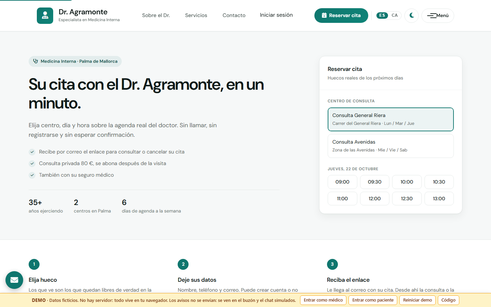
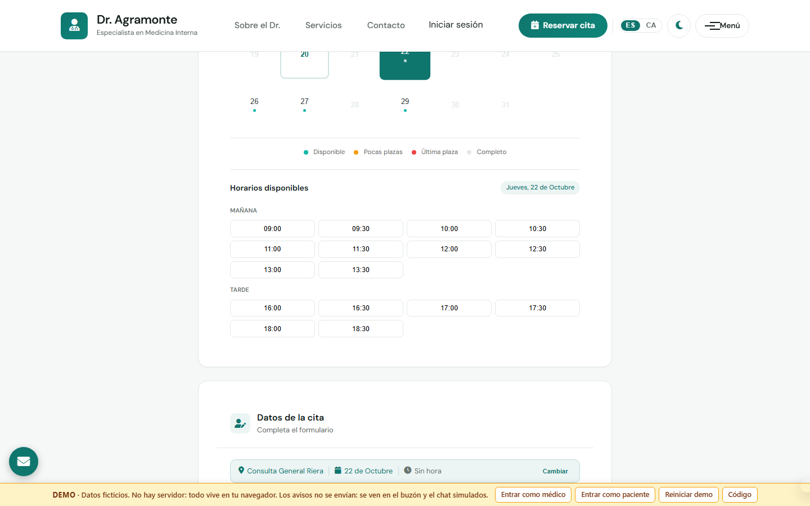
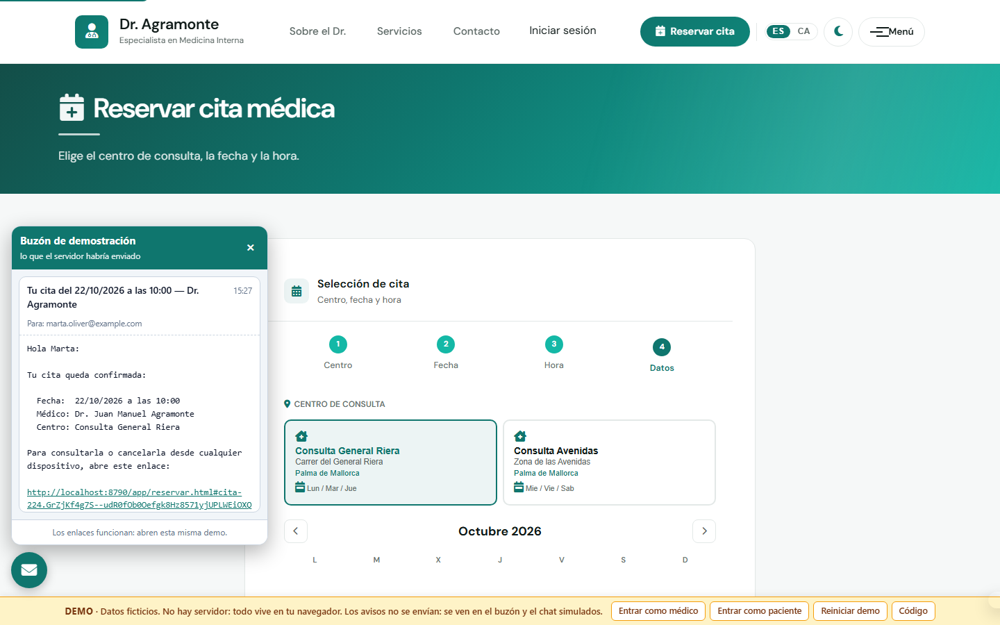
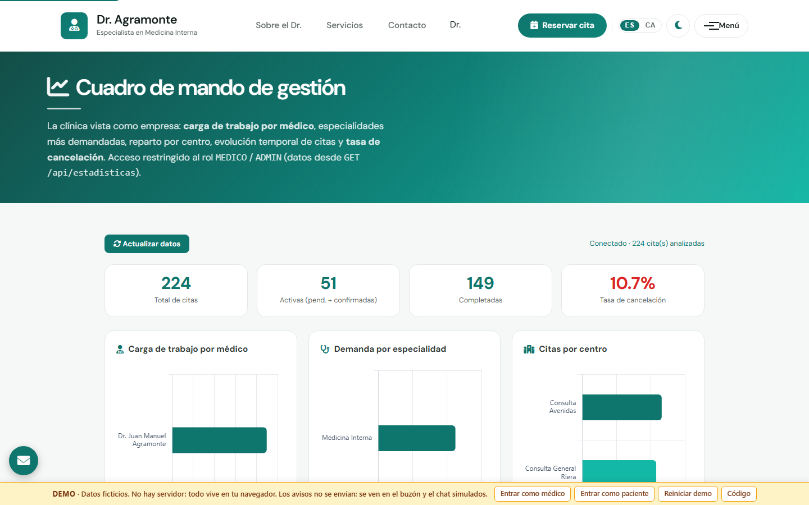
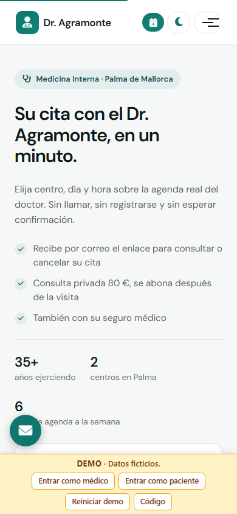

Varios centros
Cada centro tiene sus días y sus horarios. El paciente solo ve los huecos del centro que ha elegido.
Software de citas para consultas médicas
Tus pacientes eligen centro, día y hora sobre tu agenda real, sin registrarse y sin esperar a que alguien descuelgue. Tú ves la carga de cada médico, la demanda por especialidad y cuántas citas se caen.
La demo funciona entera en tu navegador. No hay que registrarse, no se instala nada y no se envía ningún aviso de verdad.

Pensado para la consulta privada y la clínica pequeña: uno o varios médicos, uno o varios centros, y una agenda que hoy se lleva por teléfono o en papel.
Cada centro tiene sus días y sus horarios. El paciente solo ve los huecos del centro que ha elegido.
Agenda por especialista, con la disponibilidad calculada en el servidor y no en el navegador.
Consulta privada con precio a la vista, o con aseguradora. El paciente lo elige al reservar.
Se despliega con Docker en un servidor propio. Los datos de tus pacientes no salen de ahí.
Cuatro piezas. Todas están en la demo y se pueden tocar.
El paciente elige centro, día y hora en cuatro pasos. Los huecos que ve son los que quedan libres de verdad: la disponibilidad la calcula el servidor, no el navegador.

Confirmación al reservar, recordatorio la víspera y comprobante al cancelar. Salen por correo, por Telegram y por SMS o WhatsApp.

Lo que la agenda sabe y el teléfono no: cuánta carga lleva cada médico, qué especialidad tiene más demanda, cómo se reparten las citas entre centros y qué porcentaje se cancela.

La mayoría de los pacientes pide cita desde el teléfono, a veces con mala cobertura. La aplicación se instala como una app y guarda lo último que vio.

Por si quien lo evalúa es el informático de la clínica y no el médico.
No hay servidor detrás. La API está simulada en el navegador y todo lo que reserves vive en tu pestaña: si vacías los datos del sitio, desaparece. Los datos de pacientes y médicos son ficticios.
Ningún aviso se envía de verdad. Los correos se ven en un buzón simulado y los mensajes de Telegram en un chat simulado, para que puedas leer exactamente lo que recibiría el paciente sin dar tu número ni tu correo.
Tampoco se demuestran aquí la disponibilidad calculada en el servidor ni el control de acceso por rol, porque las dos cosas ocurren en el backend. Para verlas funcionando hace falta levantar el proyecto, que son dos comandos de Docker y están en el repositorio.
Entra como paciente y pide una cita, o entra como médico y mira el cuadro de mando. Se tarda menos en probarlo que en leer esta página.